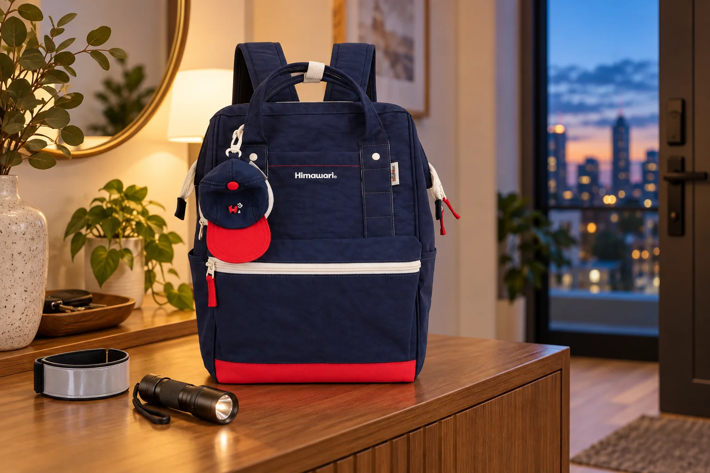

해 질 무렵 걷는 날: 백팩과 별도 반사 소품 점검하기

낮에 집을 나섰다가 해가 진 뒤 돌아오는 날에는 출발할 때 보이던 가방의 위치가 달라집니다. 겉옷이 바뀌고, 손에는 휴대전화나 우산이 들릴 수 있죠. 이때 가방이 알아서 눈에 띄게 해줄 것이라고 기대하기보다, 별도로 준비한 소품이 몸이나 가방에 가려지지 않는지 확인하는 편이 낫습니다. 백팩의 수납과 착용 상태를 점검하는 짧은 순서를 만들어 보세요. 이 글은 보행 안전 장비의 성능을 보증하지 않습니다.
돌아올 시간과 이동 구간을 먼저 봅니다
낮 일정만 보고 물건을 챙기지 말고 귀가할 무렵의 밝기와 이동 경로를 함께 떠올려 보세요. 버스 정류장까지 걸어야 하는지, 가로등이 적은 구간이 있는지에 따라 손에 둘 물건도 달라집니다. 이동 중 필요한 연락 수단과 교통카드가 가방의 어느 쪽에 있는지 출발 전에 확인합니다. 비가 예상된다면 우산을 넣을 자리도 따로 정하되, 물기가 생긴 우산이 종이류나 전자기기에 닿지 않도록 준비하세요.
별도 반사 소품은 가려지지 않는 자리에 둡니다
반사 밴드나 걸이형 소품을 쓰는 경우에는 제조사의 부착 방법을 따르고, 실제 착용한 옷과 가방에 가려지지 않는지 살펴보세요. 앞에서 보이는 위치와 뒤에서 보이는 위치가 다를 수 있으니 거울이나 동행자의 도움을 받아 확인해도 좋습니다. 가방의 작은 장식이나 밝은 색만으로 야간 시인성을 판단하지는 마세요. 대표 사진의 반사 밴드와 손전등은 별도 연출 소품이며 Himawari No.9007의 기본 구성이나 성능을 뜻하지 않습니다.
늘어진 끈과 흔들리는 장식을 확인합니다
백팩을 멘 뒤 여유 끈이 지나치게 길게 늘어지지 않았는지 확인하세요. 지퍼 손잡이와 별도로 단 장식이 걸을 때 크게 흔들리거나 여닫는 동작을 방해한다면 위치를 조정합니다. 어깨끈 길이를 새로 바꿨다면 양쪽 균형도 가볍게 살펴보세요. 가방을 손으로 들고 걷는 구간이 있다면 손잡이에 무리한 짐이 실리지 않았는지 확인하고, 횡단이나 계단에서는 물건을 꺼내느라 시선을 오래 내려두지 않도록 합니다.
휴대전화는 멈춘 뒤 꺼내기 쉬운 자리에
지도나 연락을 확인하려고 가방을 여러 번 뒤지면 걸음이 자주 끊깁니다. 휴대전화와 교통카드처럼 이동 중 사용할 물건은 서로 부딪히지 않는 자리를 정하고, 필요한 때는 안전한 곳에 멈춘 뒤 꺼내세요. 귀중품을 가방 바깥에 그대로 드러내지 않으면서도 위치를 기억할 수 있게 하는 것이 중요합니다. 가방을 열어둔 채 걸으면 작은 물건이 빠질 수 있으므로, 꺼낸 뒤 지퍼와 주머니를 닫았는지도 확인합니다.
집에 도착하면 다음 낮 일정과 분리합니다
귀가 후에는 젖은 우산이나 외투가 가방 안에 남아 있지 않은지 먼저 봅니다. 별도 반사 소품을 다음에도 쓴다면 상태를 확인해 정해 둔 곳에 두고, 사용하지 않을 날에는 다른 소지품과 엉키지 않게 보관합니다. 내용물을 비운 뒤 가방에 습기가 남았다면 제품 관리 표시를 따라 그늘에서 말립니다. 사진은 실제 Himawari No.9007 네이비 원본을 참조한 AI 연출이며, 가방 자체의 반사·발광 기능을 표현하지 않습니다.
참고·안내
- Himawari No.9007 제품 정보
- 실제 Himawari No.9007 네이비 제품 사진을 참조한 AI 연출 이미지입니다. 반사 밴드와 손전등은 별도 소품이며 가방의 반사 기능이나 구성품을 나타내지 않습니다.
자주 묻는 질문
가방 색이 밝으면 반사 소품이 없어도 되나요?
색만으로 야간 시인성을 판단하기 어렵습니다. 별도 소품을 사용할 때는 해당 제품의 안내와 실제 노출 위치를 확인하세요.
반사 소품이 가방에 기본으로 포함되나요?
이 글의 사진 속 반사 밴드와 손전등은 연출 소품입니다. 구성품은 해당 제품의 판매 정보를 확인하세요.